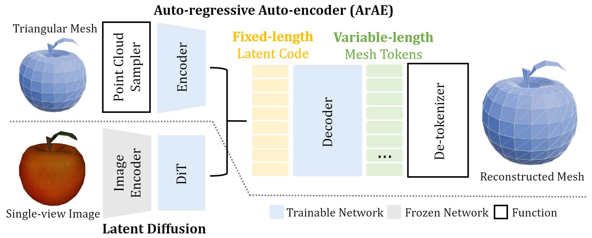
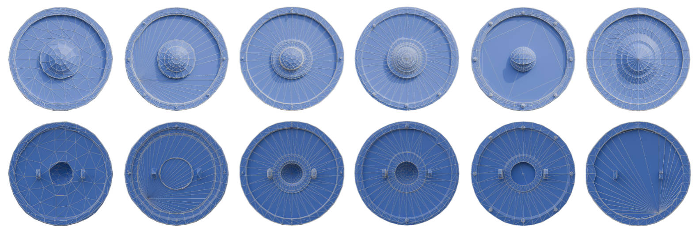

EdgeRunner: Auto-regressive Encoder for Efficient Mesh Generation
Authors Anonymized
Abstract
We propose an Auto-regressive Encoder (ArE) model that compresses triangular meshes with variable number of face into a fixed-length latent space. We start from introducing a novel mesh tokenizer to compress the mesh losslessly and reduce long-range dependency between tokens, which facilitates later training of the auto-regressive model. Our method is able to generate meshes with number of faces up to 4000, and also supports coarse-grained controlling of the targeted number of face. Further, we demonstrate that diffusion models can be trained on this latent space conditioned on other input modalities, such as single-view images to allow image-to-mesh generation. Extensive experiments demonstrate the performance of our methods in terms of generation quality, diversity, and also generalization capability for point-cloud or single-view image conditioned mesh generation.
Pipeline
Mesh Tokenizer
Our tokenizer use a modified EdgeBreaker algorithm to traverse and sequentialize a triangular mesh. The colors of triangles denote different face tokens: L (visit left) , R (visit right) , E (end of sequence)
We can de-tokenize our generated mesh token sequences to triangular meshes. Here are some visualization of the generation progress:
PointCloud Conditioned Mesh Generation
Drag with left mouse button to move the camera, right mouse button to move the object.
More Results
Image Conditioned Mesh Generation
Drag with left mouse button to move the camera, right mouse button to move the object.
More Results
Diversity of Generation
Given the same input condition (point cloud) but different random seeds, our model can generate diverse meshes:
Click the image to view meshes in 3D.
{kind=link}
{kind=link}
{kind=link}
{kind=link}